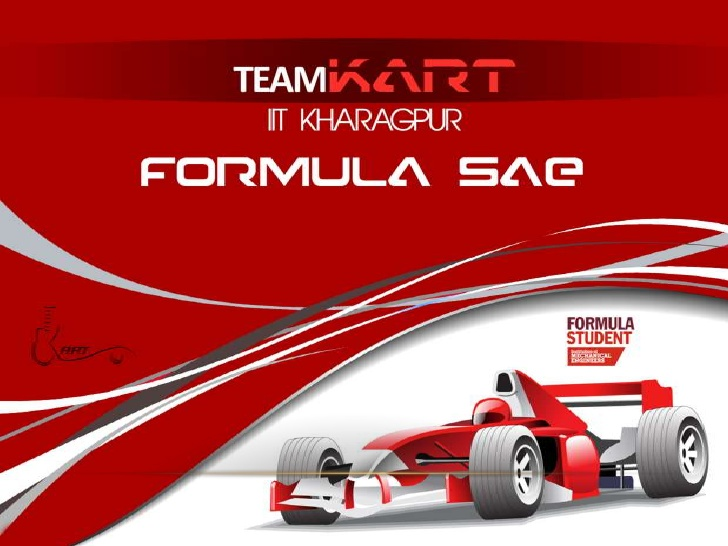

MY PORTFOLIO
HELLO, I AM AASHISH RAJ
I am a student at the Indian Institute of Technology, Kharagpur and
a Trainee at TeamKART, the Formula SAE team of IIT Kharagpur.
I am a coding enthusiast and a tech lover.

GENERAL ACADEMICS
I have been a fairly good student ever since the begining and have secured pretty
decent marks and rank in every major
examination so far.
My performance so far has been :
| Examination |
Marks/Rank |
| 10th Boards |
96% |
| 12th Boards |
96.5% |
| JEE Advanced |
4911 |
OTHER INTERESTS
I am a major coding enthuiast. I have experience in coding in languages such as JACA, C, C++ and HTML. I am also a part of the
Electronics Subsystem team at TeamKART and have some knowledge about coding in Arduino. I am also pretty interested in graphic designing using Autocad and Solidworks and in Image Processing
using the C++ programming Language. I am also extremely interested in Astronomy and Astrophysics and am involved in research work at the Space Technology Students Society, IIT Kharagpur.
My hobbies inculde singing, acting and filmmaking. I am also a trained guitarist and an artist.
In the field of Sports, I am a state level cricketer and a School level Badminton player.
REFERENCE LINKS:
IIT KGP
TeamKART
REACH ME:
Facebook
LinkedIn
GitHub
THANKS!